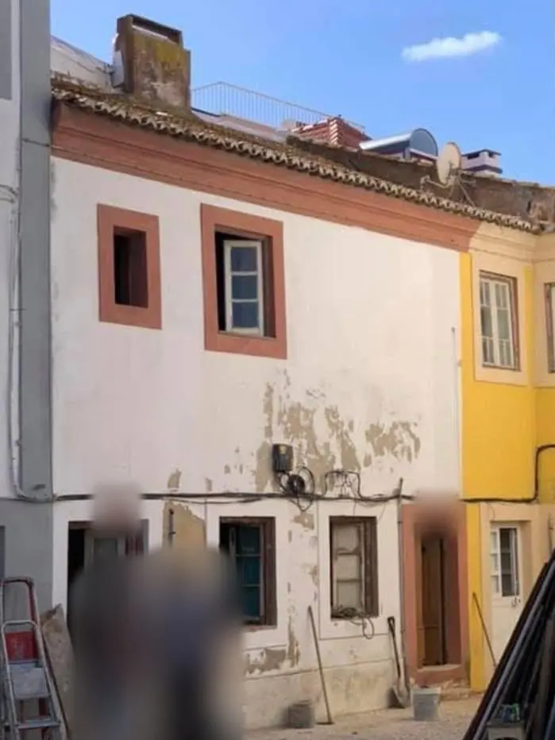
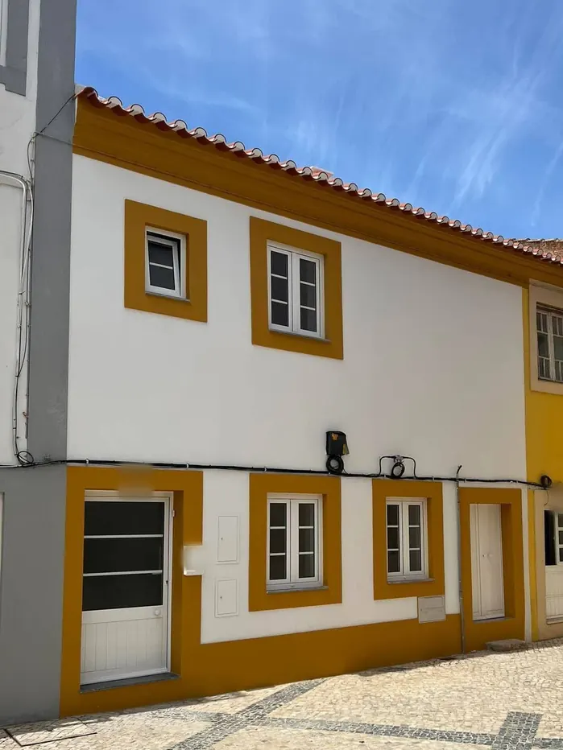
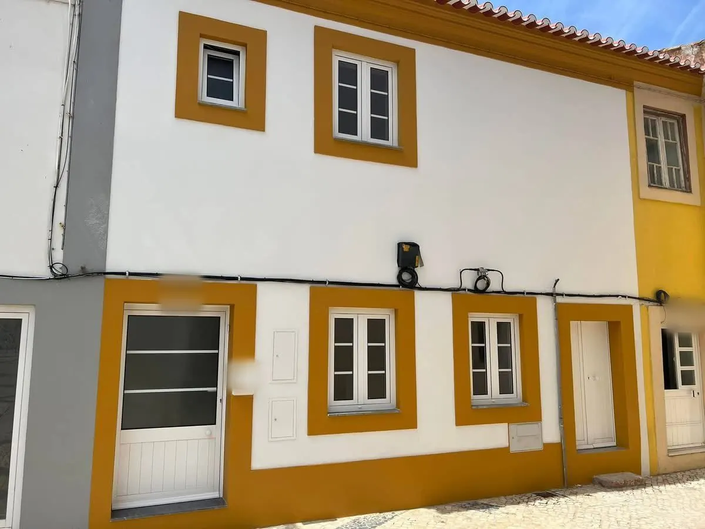
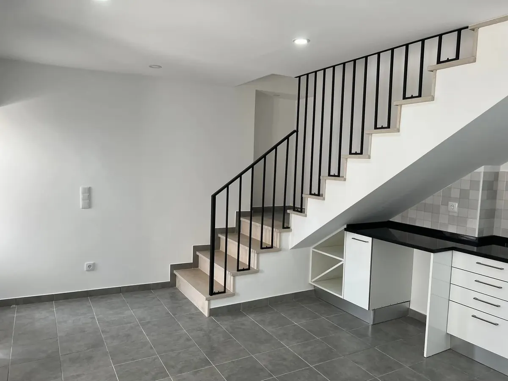
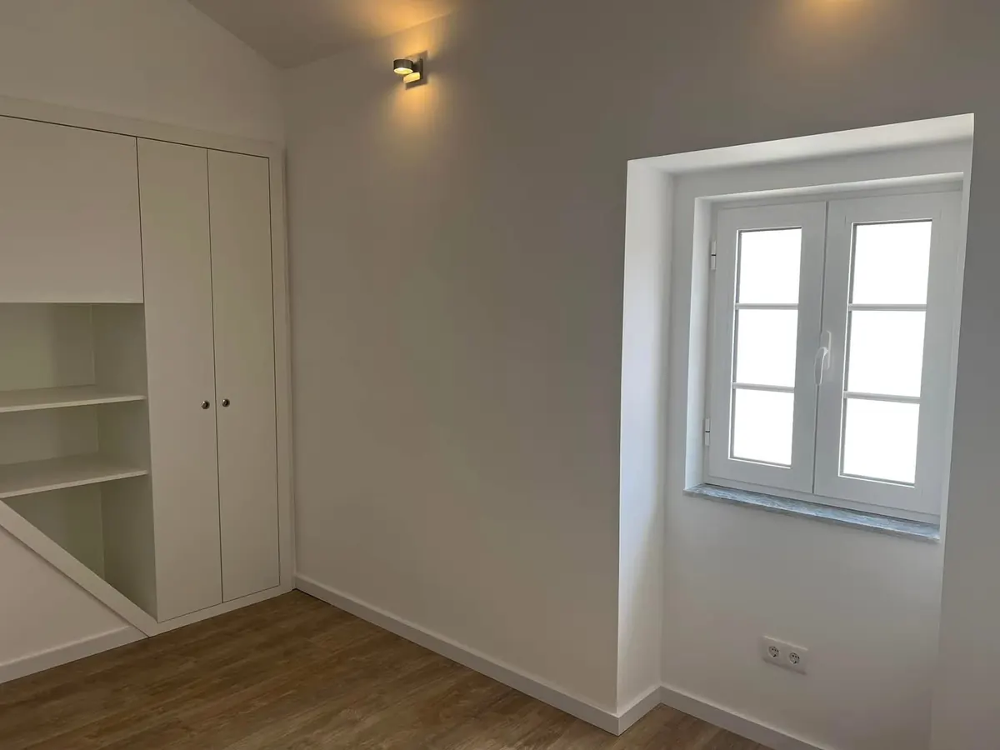

Recuperação de imóveis
Recuperação de uma casa de dois pisos
Recuperação integral de casa em Casal de Cambra (Sintra), 2026.
Obra de 2026. A fachada degradada foi reparada e pintada, com caixilharia nova, e o interior ficou com escada em pedra e guarda metálica, cozinha sob a escada e quarto com roupeiro embutido.
Antes e depois


a mesma fachada pintada de branco, com molduras e soco cor de mostarda.
Mais fotografias



Tem uma obra parecida em mente?
Descreva a obra por telefone, WhatsApp ou e-mail. O orçamento é gratuito e respondemos no prazo máximo de 8 dias úteis.
Pedir orçamento Ver outras obras
Gostava de trabalhar em obras como esta? Veja as vagas e candidate-se.
Fotografias de uma obra realizada pela LMDreams, publicadas com autorização do cliente.